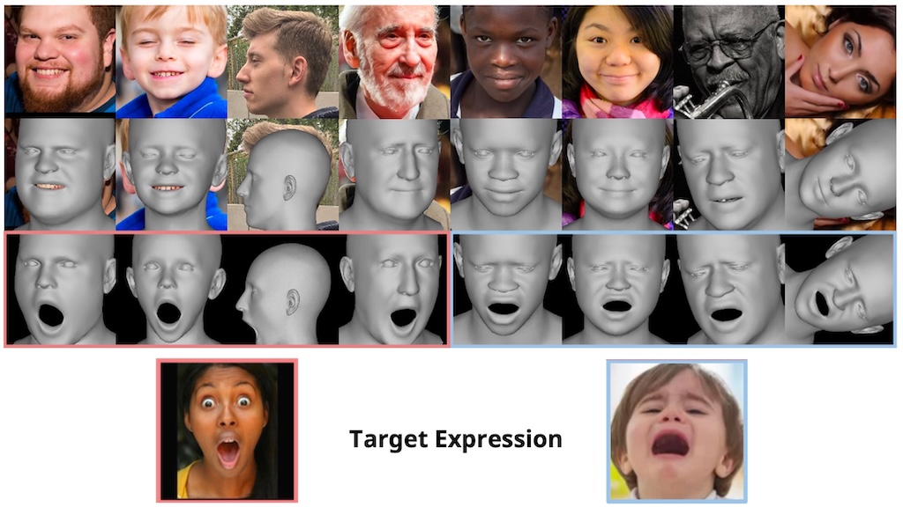

Xuangeng Chu
2nd year Ph.D. student
The University of Tokyo
Meguro, Tokyo
GitHub
Google Scholar
About me
I am currently a 2nd-year Ph.D. student at RCAST, the University of Tokyo, advised by Prof. Tatsuya Harada. Prior to that, I received my M.Eng. from Peking University, where I was advised by Prof. Yasha Wang, and I completed my B.Eng. in Computer Science at Tongji University. For my full CV, please see here.
Research Interests
My research interests focus on 3D computer vision of humans, specifically in pose estimation and human reconstruction / generation. Additionally, I have experience with other computer vision applications such as object detection, multimodal understanding, and the reconstruction of objects and scenes. My research goals are to enable everyone to easily create digital avatars for games and virtual worlds, and to improve machine understanding of humans.
News
✨ [2024.09] One paper is accepted to NeurIPS 2024!✨ [2024.07] I will be a visiting student researcher at Princeton Vision & Learning Lab and advised by Prof. Jia Deng!
✨ [2024.01] One paper is accepted to ICLR 2024!
📜 [2023.04] Start PhD studies at the University of Tokyo, thanks to Prof. Tatsuya Harada!
📜 [2023.04] One paper is accepted to ICCV 2023!
Work and Internship Experience
[2024.07 - 2024.09] Visiting Student Researcher at Princeton University, supervised by Prof. Jia Deng.
[2022.12 - 2023.11] Research Intern at International Digital Economy Academy, supervised by Dr. Yu Li.
[2021.03 - 2022.10] Research Engineer at Tencent. Worked closely with Dr. Ying Shan, Dr. Weihao Cheng and Dr. Zhongang Qi.
[2020.06 - 2021.02] Research Intern at Microsoft Research Asia, supervised by Dr. Xiulian Peng.
[2019.01 - 2020.06] Research Intern at MEGVII Technology, supervised by Dr. Xiangyu Zhang.
Research

Generalizable and Animatable Gaussian Head Avatar
Xuangeng Chu, Tatsuya Harada
NeurIPS 2024
Project Weibsite /
Code
/
Data
The first generalizable 3DGS framework for head avatars that can reconstruct realistic avatars from a single image and achieve real-time reenactment.
GPAvatar: Generalizable and Precise Head Avatar from Image(s)
Xuangeng Chu, Yu Li, Ailing Zeng, Tianyu Yang, Lijian Lin, Yunfei Liu, Tatsuya Harada
ICLR 2024
Paper /
Project Weibsite /
Code
/
Data

A framework to reconstructs 3D head avatars from one or several images in a single forward pass.

Accurate 3D Face Reconstruction with Facial Component Tokens
Tianke Zhang, Xuangeng Chu, Yunfei Liu, Lijian Lin, Zhendong Yang, Zhengzhuo Xu, Chengkun Cao, Fei Yu, Changyin Zhou, Chun Yuan, Yu Li
ICCV 2023
A framework for 3D face reconstruction from monocular images based on transformers.